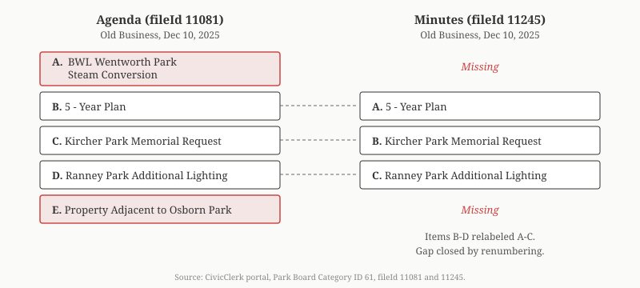

BWL's Steam Conversion Was on the Park Board Agenda. It Wasn't in the Minutes.
The Lansing Park Board's December 10, 2025 agenda listed five Old Business items. The minutes listed three. Two items were missing — including "BWL Wentworth Park Steam Conversion," tied to BWL's $100 million steam-to-hot-water conversion on the same corridor as the proposed Deep Green data center. The remaining items were relabeled to close the gap. The November meeting where the BWL item was first introduced has zero documents in CivicClerk.
LANSING, Mich. — A review of all Lansing Park Board meetings from January 2025 through March 2026, retrieved from the CivicClerk portal (Parks & Recreation Advisory Board, Category ID 61), revealed the discrepancy between the December 10, 2025 agenda and minutes. The agenda is filed as CivicClerk fileId 11081. The minutes are fileId 11245.
Agenda vs. Minutes
The December 10, 2025 agenda lists these Old Business items:
| Label | Item (Agenda) | Item (Minutes) |
|---|---|---|
| A | BWL Wentworth Park Steam Conversion | 5 - Year Plan |
| B | 5 - Year Plan | Kircher Park Memorial Request |
| C | Kircher Park Memorial Request | Ranney Park Additional Lighting |
| D | Ranney Park Additional Lighting | |
| E | Property Adjacent to Osborn Park |
Source: CivicClerk fileId 11081 (agenda-december-2025.pdf) and fileId 11245 (minutes-december-2025.pdf).
Two items are missing from the minutes: "BWL Wentworth Park Steam Conversion" (agenda item A) and "Property Adjacent to Osborn Park" (agenda item E). The remaining three items were relabeled A through C instead of retaining their original designations of B through D.
When an agenda item is not discussed at a meeting because staff is absent or time runs out, standard practice is to note "Item tabled" or "No report." Relabeling the remaining items to close the gap is a different choice.

November: Zero Documents
The December agenda lists "BWL Wentworth Park Steam Conversion" under Old Business, which means the item was first introduced at a prior meeting. The only prior meeting where it could have been introduced is November 12, 2025 (CivicClerk Event 7336).
That meeting has zero documents in CivicClerk: no agenda, no minutes, no attachments. It is the only month in 2025 without at least an agenda uploaded.
| Month (2025) | Agenda | Minutes | Source |
|---|---|---|---|
| January | Yes | Yes | CivicClerk Event 7331 |
| February | Yes | Yes | CivicClerk Event 7332 |
| April | Yes | CivicClerk Event 7333 | |
| September | Yes | CivicClerk Event 7335 | |
| November | No | No | CivicClerk Event 7336 |
| December | Yes | Yes | CivicClerk Event 7337 |
The November 12 meeting took place one week after the November 5, 2025 Deep Green public announcement.
Where Is Wentworth Park?
Wentworth Park is at 100 N Grand Avenue, directly on BWL's Phase 1 hot water construction corridor. The Ever-Green Energy presentation to the Lansing Board of Water and Light Board of Commissioners (September 9, 2025 Committee of the Whole, slides 24-26) schedules Grand Avenue construction for 2026. (BWL Board packets, bwl-cow-packet-2025-09-09.pdf)
Grand Avenue hot water pipe construction, scheduled for 2026, would pass through or adjacent to the park. The Park Board agenda item appeared in November and December 2025, exactly when construction planning would reach the Board. (For the full steam conversion timeline, see: Did BWL's Board Know About Deep Green When It Approved a $100M Steam Conversion?)
The park also contains the Rotary Steam Clock, a 31-foot clock tower powered by BWL's steam system since 1997. Converting the steam infrastructure at this location to hot water would affect the clock's operation. (Atlas Obscura; Lansing Rotary)
The Item Disappeared
After December 10, 2025, "BWL Wentworth Park Steam Conversion" has not appeared on any subsequent Park Board agenda. No resolution, tabling, or explanation was recorded.
| Meeting Date | BWL / Steam / Wentworth on Agenda? | Source |
|---|---|---|
| Nov 12, 2025 | Unknown (no documents) | CivicClerk Event 7336 |
| Dec 10, 2025 | Yes, Old Business IV.A | CivicClerk fileId 11081 |
| Jan 14, 2026 | No | CivicClerk Event 7338 |
| Feb 11, 2026 | No | CivicClerk Event 7339 |
| Mar 11, 2026 | No | CivicClerk Event 7340 |
BWL and Parks: Prior Cases
BWL has used park land for infrastructure before, and in each prior case, the Park Board acted publicly.
| Year | Park | What Happened | Source |
|---|---|---|---|
| 2016-2019 | Scott Sunken Garden | Relocated brick-by-brick to build $26M Central Substation on original site | TCLF; BWL |
| 2024-2025 | Benjamin Davis Park | Trees cut for South Reinforcement power line routing | WILX, Nov 13, 2024 |
| 2025-2026 | Wentworth Park | Steam conversion on Park Board agenda, then absent from minutes and all subsequent agendas | CivicClerk Event 7337 |
Who Sits on the Park Board?
All eight members are appointed by Mayor Andy Schor, who has publicly championed the Deep Green project: Mike Dombrowski, Kimberly Whitfield, Nate Scramlin, Isaac Francisco, Joan Lenhard, Tristan Walters, Rayvnne Gilmore, and Christopher Greene-Szmadzinski. (CivicClerk, Parks & Recreation Advisory Board, Category ID 61)
Parks Director Brett Kaschinske, who manages the board's agenda and would have direct knowledge of how agenda items are added or removed, announced plans to vacate his position by end of 2026. (February 2026 Park Board minutes, CivicClerk fileId 14757)
Michigan Open Meetings Act
Under MCL 15.269, public body minutes must include "any decisions made at a meeting open to the public" and "all roll call votes." If the board took any action on the BWL steam item, including tabling it, deferring it, or hearing a staff report, the minutes are required to reflect it.
Under MCL 15.270, any person may commence civil action for injunctive relief for Open Meetings Act violations. An intentional violation carries a civil fine of up to $2,000 for a first offense. Under MCL 15.271, decisions made in violation of the Open Meetings Act may be invalidated by circuit court within 60 days.
Grand Avenue construction is scheduled for 2026. No public body has addressed what happens to Wentworth Park.
Methodology
All Park Board meeting data was retrieved from the Lansing CivicClerk portal (Parks & Recreation Advisory Board, API Category ID 61) on March 13, 2026. The December 2025 agenda is CivicClerk fileId 11081 (agenda-december-2025.pdf). The December 2025 minutes are CivicClerk fileId 11245 (minutes-december-2025.pdf). The February 2026 minutes are CivicClerk fileId 14757 (minutes-february-2026.pdf). BWL Phase 1 construction milestones are from the September 9, 2025 COW packet (bwl-cow-packet-2025-09-09.pdf, slides 24-26), downloaded from lbwl.com/about-bwl/governance. Michigan Open Meetings Act statutes: MCL 15.269, MCL 15.270, MCL 15.271. Park Board appointment data from CivicClerk. Prior BWL park land cases: TCLF (Scott Sunken Garden), BWL (Central Substation), WILX (Benjamin Davis Park). Steam clock: Atlas Obscura, Lansing Rotary.